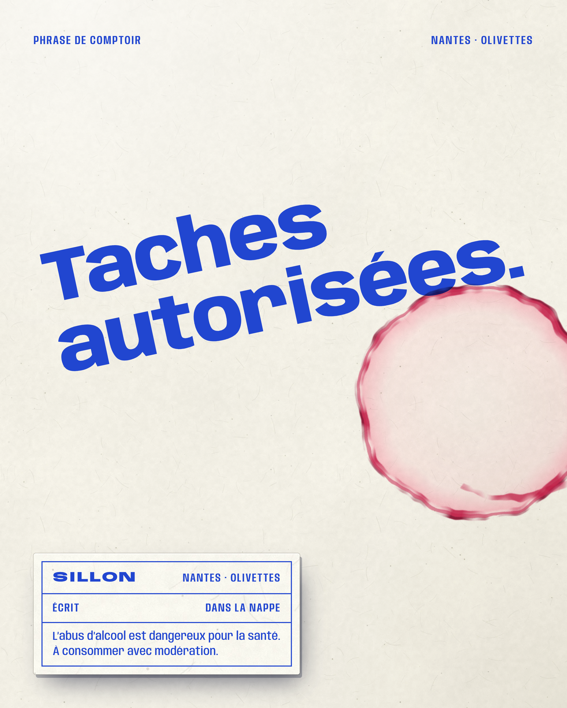

<!doctype html><meta charset="utf-8"><title>Sillon · 24 · Une phrase, plein cadre</title><meta name="robots" content="noindex">
<link rel="stylesheet" href="../brand/marque.css"><link rel="stylesheet" href="plates.css"><link rel="stylesheet" href="reseaux.css">
<script src="../brand/marque.js"></script><script src="../brand/matiere.js"></script><script src="../brand/verse.js"></script>
<style>
  /* 24 · Une phrase. Une publication seule, plein cadre : le fichier du modèle à la largeur de la planche, entre une
     tête et un pied de publication inventés, génériques (l'avatar, le nom ; la légende). Rien d'autre : la phrase, le
     rond du verre, la contre-étiquette. Préfixe r24-. */
  #p{height:2010px}
</style>
<body><div class="plate soir" id="p"></div>
<script>
const A = Marque, C = A.COULEURS, el = document.getElementById('p');
el.innerHTML = `<div class="r24-barre" style="height:118px;padding-top:6px">${A.icone(54, C.bleu, C.tuffeau)}<div><b>Sillon</b><div class="t-etq" style="opacity:.7">${A.LIEU}</div></div>
    <div class="t-etq" style="margin-left:auto;opacity:.7">24 · Une phrase</div></div>
  
  <div class="r24-barre" style="height:142px;align-items:flex-start;padding-top:28px;flex-direction:column;gap:10px">
    <div><b>Sillon</b>&nbsp;&nbsp;<span class="t-txt" style="font-size:19px">${A.VOIX.nappe} ${A.SIGNATURE}</span></div>
    <div class="t-etq" style="opacity:.75;width:100%;display:flex;justify-content:space-between"><span>Modèle · une phrase de comptoir seule, la plus grande qui tient, penchée de 12° · le rond du verre qui l’a posée</span><span>2026</span></div></div>`;
window.pret = Promise.all([...el.querySelectorAll('img')].map((i) => i.decode().catch(() => 0)));
</script></body>
